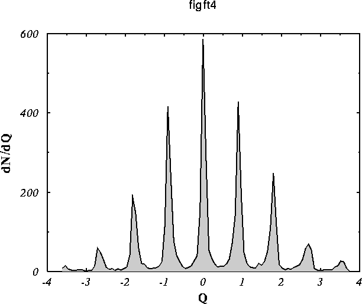

In pure gauge QCD (no fermions) instantons are distributed
randomly. Therefore, the total topological charge (number
of instantons minus number of anti-instantons) in a finte
volume should be a simple gaussian distribution. This is
nicely shown by this lattice calculation.
Source: E. A. Alles et al., preprint